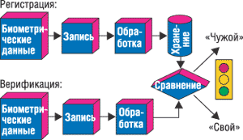
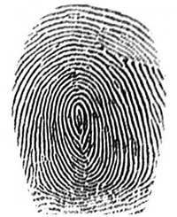
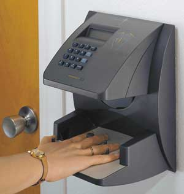
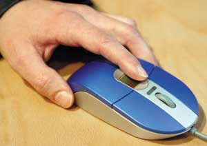
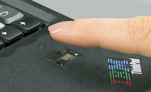

Владислав Шаров
Безопасность - это субстанция, которую трудно оценить количественно, поскольку сложно представить себе клиента, жертвующего собственной безопасностью из соображений экономии. Рост террористической угрозы и необходимость совершенствования систем обеспечения безопасности привели к тому, что объем рынка биометрического оборудования в последнее время начал быстро расти, - ожидается, что к 2007 г. он достигнет 7 млрд долл. Крупнейшими заказчиками биометрических систем станут не только коммерческие учреждения, но и государственные службы и ведомства. Особое внимание будет уделяться аэропортам, стадионам и другим объектам, нуждающимся в системах массового контроля посетителей.
Уже в 2006 г. граждане стран Евросоюза станут обладателями так называемых электронных паспортов - документов, построенных на специальной микросхеме, в которой записаны некоторые биометрические данные владельца (например, информация об отпечатках пальцев, радужной оболочке глаза), а также сопутствующие гражданские данные (номера карточки страхования, водительского удостоверения, банковских счетов и т. п.). Область применения таких документов практически неограниченна: их можно использовать как международные удостоверения личности, кредитные карты, медицинские карты, страховые полисы, пропуска - список можно продолжать и продолжать. 20 сентября 2004 г. Президент РФ подписал распоряжение о создании межведомственной группы, которая должна заниматься подготовкой к внедрению паспортов с биометрической информацией. Срок для подготовки пакета документов был дан до 1 января 2006 г.
Но если в повседневной жизни к биометрическим системам нам еще придется привыкать, то в некоторых областях биометрия уже активно используется на протяжении нескольких лет. И одна из таких областей - компьютерная безопасность. Самое распространенное решение на базе биометрических технологий - это идентификация (или верификация) по биометрическим характеристикам в корпоративной сети или при запуске рабочей станции (ПК, ноутбук и т. д.).
Биометрическое распознавание объекта заключается в сравнении физиологических или психологических особенностей этого объекта с его характеристиками, хранящимися в базе данных системы. Главная цель биометрической идентификации заключается в создании такой системы регистрации, которая бы крайне редко отказывала в доступе легитимным пользователям и в то же время полностью исключала несанкционированный вход в компьютерные хранилища информации. По сравнению с паролями и карточками такая система обеспечивает гораздо более надежную защиту, ведь собственное тело нельзя ни забыть, ни потерять.
Если речь идет о защите рабочей станции, то шаблоны биометрических данных (например, отпечатков пальцев) зарегистрированных пользователей находятся в защищенном хранилище непосредственно на этой рабочей станции. После успешного прохождения процедуры биометрической идентификации пользователю предоставляется доступ в операционную систему. В случае корпоративной сети все шаблоны биометрических данных всех пользователей сети хранятся централизованно на специально выделенном сервере аутентификации. При входе в сеть пользователь, проходя процедуру биометрической идентификации, работает непосредственно со специализированным сервером, на котором и происходит проверка предоставляемых идентификаторов. Выделение в структуре корпоративной сети отдельного сервера биометрической аутентификации позволяет строить масштабируемые сетевые решения и хранить на таком сервере конфиденциальную информацию, доступ к которой будет предоставлен только по биометрическому идентифицирующему признаку владельца информации.
При построении корпоративных решений достаточно часто, кроме входа в сеть, процедуры биометрической проверки интегрируются в другие используемые в компании программы, например, в системы управления предприятием, различные офисные приложения, корпоративное ПО и т. д. При таком подходе необходимые для идентификации данные всех пользователей централизованно сохраняются на сервере аутентификации, а сам пользователь освобождается от необходимости запоминать пароли для всех используемых программ или постоянно носить с собой различные карточки.
Кроме того, достаточно широкое распространение получили средства криптографической защиты, в которых доступ к ключам шифрования предоставляется только после биометрической идентификации их владельца. Надо отметить, что в сфере компьютерной безопасности шаблон используемой биометрической характеристики, как правило, подвергается одностороннему преобразованию, т. е. из него нельзя путем обратной процедуры восстановить отпечаток пальца или рисунок радужной оболочки глаза.
Методы аутентификации
Как известно, аутентификация подразумевает проверку подлинности субъекта, которым в принципе может быть не только человек, но и программный процесс. Вообще говоря, аутентификация индивидов возможна при предъявлении информации, хранящейся в разной форме. Аутентификация позволяет обоснованно и достоверно разграничить права доступа к информации, находящейся в общем пользовании. Однако, с другой стороны, возникает проблема обеспечения целостности и достоверности этой информации. Пользователь должен быть уверен, что получает доступ к информации из заслуживающего доверия источника и что данная информация не была изменена без соответствующих санкций. Поиск совпадения "один к одному" (по одному атрибуту) обычно называют верификацией. Она отличается высокой скоростью и предъявляет минимальные требования к вычислительной мощности компьютера. Поиск же "один ко многим" называется идентификацией.
Биометрические технологии аутентификации можно разделить на две большие категории - физиологические и психологические. К первой относятся методы, основанные на физиологической (статической) характеристике человека, т. е. неотъемлемой, уникальной характеристике, данной ему от рождения. Здесь анализируются такие признаки, как черты лица, структура глаза (сетчатки или радужной оболочки), параметры пальцев (папиллярные линии, рельеф, длина суставов и т. д.), ладонь (ее отпечаток или топография), форма руки, рисунок вен на запястье или тепловая картина.
К группе психологических относят так называемые динамические методы, которые основываются на поведенческой (динамической) характеристике человека. Иными словами, они используют особенности, характерные для подсознательных движений в процессе воспроизведения какого-либо действия. К таким характеристикам относятся голос человека, особенности его подписи, динамические параметры письма, особенности ввода текста с клавиатуры и т. д.
Любая биометрическая система позволяет распознавать некий шаблон и устанавливать аутентичность конкретных физиологических или поведенческих характеристик пользователя. Логически биометрическую систему (рис. 1) можно разделить на два модуля: регистрации и идентификации. Модуль регистрации отвечает за то, чтобы система научилась идентифицировать конкретного человека. На этапе регистрации биометрические датчики сканируют его необходимые физиологические или поведенческие характеристики, создавая их цифровое представление. Специальный модуль обрабатывает это представление с тем, чтобы выделить характерные особенности и сгенерировать более компактное и выразительное представление, называемое шаблоном. Для изображения лица такими характерными особенностями могут быть размер и относительное расположение глаз, носа и рта. Шаблон для каждого пользователя хранится в базе данных биометрической системы.
|  | Рис. 1. Блок-схема биометрической системы.
|
Модуль идентификации отвечает за распознавание человека. На этапе идентификации биометрический датчик регистрирует характеристики человека, идентификация которого проводится, и преобразует эти характеристики в тот же цифровой формат, в котором хранится шаблон. Полученный шаблон сравнивается с хранимым, с тем чтобы определить, соответствуют ли эти шаблоны друг другу. При использовании в процессе аутентификации технологии идентификации отпечатков пальцев имя пользователя вводится для регистрации, а отпечаток пальца заменяет пароль. Эта технология использует имя пользователя в качестве указателя для получения учетной записи пользователя и проверки соответствия "один к одному" между шаблоном считанного при регистрации отпечатка и сохраненным ранее шаблоном для данного имени пользователя. В другом случае введенный при регистрации шаблон отпечатка пальца сопоставляется со всем набором сохраненных шаблонов.
Бесперебойные источники биометрической информацииОсенью 2004 г. корпорация APC (http://www.apc.com) анонсировала биометрический менеджер паролей (Biometric Password Manager) - персональный сканер отпечатков пальцев, облегчающий пользователям ПК и ноутбуков управление личными паролями. Свой дебют в нетипичном для производителя ИБП сегменте в компании объясняли стремлением защищать данные на любом этапе их создания, передачи и хранения. Оно же послужило причиной выхода в свет таких продуктов APC, как сумка TravelPower Case и мобильный маршрутизатор для беспроводных сетей (Wireless Mobile Router). Биометрическая новинка запоминает до 20 эталонов отпечатков пальцев, что позволяет хранить пароли 20 пользователей в одной компьютерной системе. Для идентификации пользователю достаточно приложить к устройству палец, при этом конструкция менеджера паролей обеспечивает точное сканирование отпечатка. Благодаря технологии AuthenTec TruePrint менеджер сканирует отпечатки пальцев, анализируя их истинную биологическую структуру под поверхностью кожи, вне зависимости от таких ее типичных дефектов, как сухость, потертость, мозолистость, загрязнение и жировые пленки. В комплект поставки включен кабель USB и совместимое с ОС Windows 98/Me/2000/XP ПО, позволяющее хранить неограниченное число имен пользователей и паролей.
|
Статические методы
По отпечатку пальца
В основе этого метода лежит уникальность рисунка папиллярных узоров на пальцах у каждого человека (рис. 2). Отпечатки пальцев - наиболее точная, дружественная к пользователю и экономичная биометрическая характеристика из всех, используемых в компьютерных системах идентификации. Устраняя для пользователей потребность в паролях, технология распознавания отпечатков пальцев сокращает число обращений в службу поддержки и снижает расходы на сетевое администрирование.
|  | Рис. 2. Папиллярные узоры уникальны.
|
Обычно системы для распознавания отпечатков пальцев делят на два типа: для идентификации, или AFIS (Automatic Fingerprint Identification Systems) и для верификации. В первом случае используются отпечатки всех десяти пальцев.
Преимущества доступа по отпечатку пальца - простота использования, удобство и надежность. Существуют два основополагающих алгоритма распознавания отпечатков пальцев: по отдельным деталям (характерным точкам) и по рельефу всей поверхности пальца. Соответственно в первом случае устройство регистрирует только некоторые участки, уникальные для конкретного отпечатка, и определяет их взаимное расположение. Во втором случае обрабатывается изображение всего отпечатка. В современных системах все чаще используется комбинация этих двух способов, что позволяет избежать недостатков обоих и повысить достоверность идентификации.
Единовременная регистрация отпечатка пальца человека на оптическом сканере занимает не слишком много времени. ПЗС-камера, выполненная в виде отдельного устройства или встроенная в клавиатуру, делает снимок отпечатка пальца. Затем с помощью специальных алгоритмов полученное изображение преобразуется в уникальный "шаблон" - карту микроточек этого отпечатка, которые определяются имеющимися в нем разрывами и пересечениями линий. Этот шаблон (а не сам отпечаток) затем шифруется и записывается в базу данных для аутентификации сетевых пользователей. В одном шаблоне хранится от нескольких десятков до сотен микроточек. При этом пользователи могут не беспокоиться о неприкосновенности своей частной жизни, поскольку сам отпечаток пальца не сохраняется и его нельзя воссоздать по микроточкам.
Преимущество ультразвукового сканирования - в возможности определить требуемые характеристики на грязных пальцах и даже через тонкие резиновые перчатки. Стоит отметить, что современные системы распознавания нельзя обмануть даже свежеотрубленными пальцами (микросхема измеряет физические параметры кожи).
Вероятность ошибки при идентификации пользователя намного меньше, чем у других биометрических методов. Качество распознавания отпечатка и возможность его правильной обработки алгоритмом сильно зависят от состояния поверхности пальца и его положения относительно сканирующего элемента. Разные системы предъявляют различные требования к этим двум параметрам. Характер требований, в частности, зависит от применяемого алгоритма.
По геометрии руки
В этой технологии оценивается несколько десятков различных характеристик, включая размеры самой ладони в трех измерениях, длину и ширину пальцев, очертания суставов и т. п. С помощью специального устройства (рис. 3), состоящего из камеры и нескольких подсвечивающих диодов (включаясь по очереди, они дают разные проекции ладони), строится трехмерный образ кисти руки. В плане надежности идентификация по геометрии кисти сравнима с идентификацией по отпечатку пальца, хотя устройство для считывания отпечатков ладоней занимает больше места.
|  | Рис. 3. Идентификация по геометрии кисти.
|
По расположению вен на лицевой стороне ладони
С помощью инфракрасной камеры считывается рисунок вен на лицевой стороне ладони или кисти руки, полученная картинка обрабатывается и по схеме расположения вен формируется цифровая свертка.
По геометрии лица
Идентификация человека по лицу, без сомнения, - самый распространенный способ распознавания в обычной жизни. Но в плане технической реализации она представляет собой более сложную (с математической точки зрения) задачу, нежели распознавание отпечатков пальцев, и требует более дорогостоящей аппаратуры (цифровой видео- или фотокамеры и платы захвата видеоизображения). После получения изображения система анализирует параметры лица (например, расстояние между глазами и носом). У этого метода есть один существенный плюс: для хранения данных об одном образце идентификационного шаблона требуется совсем немного памяти. А все потому, что, как выяснилось, человеческое лицо можно "разобрать" на относительно небольшое количество участков, неизменных у всех людей. Например, для вычисления уникального шаблона, соответствующего конкретному человеку, требуется всего от 12 до 40 характерных участков.
При построении трехмерного образа лица человека на нем выделяются контуры бровей, глаз, носа, губ и т. д., вычисляется расстояние между ними и строится не просто образ, а еще и множество его вариантов на случаи поворота лица, наклона, изменения выражения. Число образов варьируется в зависимости от целей применения данного способа (для аутентификации, верификации, удаленного поиска на больших территориях и т. д.). Большинство алгоритмов позволяет компенсировать наличие у индивида очков, шляпы и бороды. Для этой цели обычно используется сканирование лица в инфракрасном диапазоне.
По радужной оболочке глаза
Довольно надежное распознавание обеспечивают системы, анализирующие рисунок радужной оболочки глаза человека. Дело в том, что эта часть человеческого организма весьма стабильна. Она практически не меняется в течение всей жизни, не зависит от одежды, загрязнений и ран. Заметим также, что оболочки правого и левого глаза по рисунку существенно различаются.
При распознавании по радужной оболочке различают активные и пассивные системы. В системах первого типа пользователь должен сам настроить камеру, передвигая ее для более точной наводки. Пассивные системы проще в использовании, поскольку камера в них настраивается автоматически. Высокая надежность этого оборудования позволяет применять его даже в исправительных учреждениях.
Преимущество сканеров для радужной оболочки состоит в том, что они не требуют от пользователя сосредоточиться на цели, потому что образец пятен на радужной оболочке находится на поверхности глаза. Фактически видеоизображение глаза можно отсканировать на расстоянии менее метра.
По сетчатке глаза
Метод идентификации по сетчатке глаза получил практическое применение сравнительно недавно - где-то в середине 50-х годов теперь уже прошлого века. Именно тогда было доказано, что даже у близнецов рисунок кровеносных сосудов сетчатки не совпадает. Для того, чтобы зарегистрироваться в специальном устройстве, достаточно посмотреть в глазок камеры менее минуты. За это время система успевает подсветить сетчатку и получить обратно отраженный сигнал. Для сканирования сетчатки используется инфракрасное излучение низкой интенсивности, направленное через зрачок к кровеносным сосудам на задней стенке глаза. Из полученного сигнала выделяется несколько сотен первоначальных характерных точек, информация о которых усредняется и сохраняется в кодированном файле.
К недостаткам подобных систем следует в первую очередь отнести психологический фактор: не всякому человеку приятно смотреть в неведомое темное отверстие, где что-то светит в глаз. К тому же смотреть надо очень аккуратно, так как подобные системы, как правило, чувствительны к неправильной ориентации сетчатки. Сканеры для сетчатки глаза получили большое распространение для доступа к сверхсекретным системам, поскольку гарантируют один из самых низких процентов отказа в доступе для зарегистрированных пользователей и почти нулевой процент ошибок.
По термограмме лица
В основе данного способа аутентификации лежит уникальность распределения на лице артерий, снабжающих кровью кожу, которые выделяют тепло. Для получения термограммы используются специальные камеры инфракрасного диапазона. В отличие от распознавания по геометрии лица, данный метод позволяет различать даже близнецов.
Динамические методы
По голосу
Это одна из старейших технологий, но в настоящее время ее развитие ускорилось, так как предполагается широко использовать ее в "интеллектуальных зданиях". Существует достаточно много способов построения кода идентификации по голосу; как правило, это различные сочетания частотных и статистических характеристик голоса. Здесь могут оцениваться такие параметры, как высота тона, модуляция, интонация и т. п. В отличие от распознавания внешности, данный метод не требует дорогостоящей аппаратуры - достаточно звуковой платы и микрофона.
Идентификация по голосу удобна, но в то же время не так надежна, как другие биометрические методы. Например, человек с простудой может столкнуться с трудностями при использовании таких систем. Голос формируется из комбинации физиологических и поведенческих факторов, поэтому основная проблема, связанная с этим биометрическим подходом, - это точность идентификации. В настоящее время идентификация по голосу используется для управления доступом в помещение средней степени безопасности.
По рукописному почерку
Как оказалось, подпись - это такой же уникальный атрибут человека, как и его физиологические характеристики. Кроме того, метод идентификации по подписи более привычен для любого человека, поскольку он, в отличие от снятия отпечатков пальцев, не ассоциируется с криминальной сферой.
Одна из перспективных технологий аутентификации основана на уникальности биометрических характеристик движения человеческой руки во время письма. Обычно выделяют два метода обработки данных о подписи: простого сравнения с образцом и динамической верификации. Первый из них очень ненадежен, так как основан на обычном сравнении введенной подписи с хранящимися в базе данных графическими образцами. Из-за того, что подпись не может быть всегда одинаковой, этот метод работает с большим процентом ошибок. Метод динамической верификации требует намного более сложных вычислений и позволяет в реальном времени фиксировать параметры процесса подписи, такие, как скорость движения руки на разных участках, сила давления и длительность различных этапов подписи. Это дает гарантии того, что подпись не сможет подделать даже опытный графолог, поскольку никто не в состоянии в точности скопировать поведение руки владельца подписи.
Пользователь, используя стандартный дигитайзер и ручку, имитирует свою обычную подпись, а система считывает параметры движения и сверяет их с теми, что были заранее введены в базу данных. При совпадении образа подписи с эталоном система прикрепляет к подписываемому документу информацию об имени пользователя, адрес его электронной почты, должность, текущее время и дату, параметры подписи, включающие несколько десятков характеристик динамики движения (направление, скорость, ускорение) и другие. Эти данные шифруются, затем для них вычисляется контрольная сумма, и все это шифруется еще раз, образуя так называемую биометрическую метку. Для настройки системы вновь зарегистрированный пользователь выполняет процедуру подписания документа от пяти до десяти раз, что позволяет получить усредненные показатели и доверительный интервал. Впервые данную технологию использовала компания PenOp.
Идентификацию по подписи нельзя использовать повсюду - в частности, этот метод проблематично применять для ограничения доступа в помещения или для доступа в компьютерные сети. Однако в некоторых областях, например, в банковской сфере, а также всюду, где происходит оформление важных документов, проверка правильности подписи может стать самым эффективным, а главное, необременительным и незаметным способом.
По клавиатурному почерку
Метод в целом аналогичен вышеописанному, но вместо росписи в нем используется некое кодовое слово (если используется личный пароль пользователя, такую аутентификацию называют двухфакторной), и не требуется никакого специального оборудования, кроме стандартной клавиатуры. В качестве основной характеристики, по которой строится свертка для идентификации, выступает динамика набора кодового слова.
Сравнение методов
Для сравнения различных методов и способов биометрической идентификации используются статистические показатели - вероятность ошибки первого рода (не пустить в систему "своего") и ошибки второго рода (пустить в систему "чужого"). Сортировать и сравнивать описанные выше биометрические методы по показаниям ошибок первого рода очень сложно, так как они сильно разнятся для одних и тех же методов по причине сильной зависимости от оборудования, на котором они реализованы. Тем не менее наметились два лидера - аутентификация по отпечаткам пальцев и по радужной оболочке глаза.
Решения, использующие дактилоскопические методы
Как отмечают эксперты, к настоящему времени компьютерные дактилоскопические системы достигли такого совершенства, что позволяют правильно идентифицировать человека по его отпечаткам пальцев более чем в 99% случаев. Конкурс, проведенный Национальным институтом стандартов и технологий (NIST) министерства торговли США, выявил тройку призеров среди таких систем. Специалисты NIST провели всестороннее тестирование 34 представленных на рынке систем идентификации по отпечаткам пальцев, разработанных 18 различными компаниями. Финансировалось исследование министерством юстиции США в рамках программы интеграции систем идентификации по отпечаткам пальцев, используемых в ФБР и в министерстве внутренней безопасности США.
Для тестирования систем использовался набор из 48 105 комплектов отпечатков пальцев, принадлежащих 25 309 человекам. Наилучшие (и примерно одинаковые) результаты показали системы, выпускаемые японской компанией NEC, французской Sagem и американской Cogent. Исследование показало, в частности, что процент ошибок для различных систем существенно зависит от того, сколько отпечатков пальцев берется у конкретного человека для идентификации. Рекордный результат составил 98,6% при идентификации по отпечатку одного пальца, 99,6% - по двум и 99,9% - по четырем и более пальцам.
На рынке появляются все новые и новые системы, основанные на таком методе идентификации. Так, компания SecuGen (http://www.secugen.com), специализирующаяся на безопасности, предлагает оборудование и ПО, позволяющее применять дактилоскопическую идентификацию в сетях под управлением Windows. Пользователю достаточно приложить палец к сенсору, чтобы программа его опознала и определила уровень допуска. Сканирующий сенсор, используемый в системе, обходится разрешающей способностью в 500 dpi. В настоящее время система способна работать под управлением Windows NT/2000 и Windows Server 2003. Приятным нововведением, облегчающим авторизацию, стала возможность сопоставлять отпечаткам разных пальцев пользователя разные же регистрационные записи.
Выпускаются сегодня и клавиатуры, и мыши со встроенным сканером отпечатков пальцев (рис. 4). Так, корпорация Microsoft (http://www.microsoft.com) предлагает комплект Microsoft Optical Desktop with Fingerprint Reader (клавиатура плюс мышь со считывателем отпечатков пальцев). Клавиатура Optical Desktop with Fingerprint Feature USB имеет мультимедийные клавиши, пять программируемых кнопок и колесико Tilt Wheеl, которым можно прокручивать текст и по вертикали, и по горизонтали. Беспроводная мышь Wireless IntelliMouse Explorer поставляется вместе с отдельным USB-сканером Fingerprint Reader, отличается заметно увеличившимся временем работы и также оснащена колесиком Tilt Wheel.
|  | Рис. 4. Мышь со сканером.
|
Однако тот факт, что Microsoft освоила выпуск мышей и клавиатур со встроенными сканерами отпечатков пальцев, пока не значит, что нельзя запустить Windows, не пройдя биометрическую идентификацию. В настоящее время корпорация просто следует общей тенденции. А дальше - как знать.
А вот в Casio Computer разработан прототип ЖК-дисплея со встроенным сканером отпечатков пальцев. Устройство, имеющее диагональ 1,2 дюйма, предназначено для мобильных телефонов. Сканеры отпечатков пальцев, как правило, выполняются на ПЗС-матрицах, которые захватывают изображение, или на базе массива конденсаторных датчиков, емкость которых изменяется в соответствии с характером рисунка. В конструкции же дисплея Casio используется слой оптических датчиков на прозрачной подложке толщиной 0,7 мм, которая, в свою очередь, размещается поверх обычного ЖК-экрана. Как объясняют в Casio, ПЗС-датчики плохо считывают отпечатки с испачканных пальцев, а конденсаторные - если кожа слишком сухая. По утверждению представителей компании, ее оптические датчики указанных недостатков лишены.
Телефон с "отпечатком"Первой, кто решился встроить в мобильный телефон систему распознавания отпечатков пальцев, стала корейская компания Pantech (http://www.pantech.com). В начале осени прошлого года она вышла на рынок с моделью GI100. До красот цветного дисплея, фотокамеры, игр и иных функций меню смогут добраться лишь зарегистрированные пользователи (оставившие в памяти телефона свои отпечатки). Прикоснувшись к сенсору, владелец может разблокировать клавиатуру и получить доступ ко всем разделам меню. Функция Secret Finger Dial реализует быстрый дозвон по 10 "секретным" телефонным номерам, причем каждому из них можно сопоставить отдельный отпечаток пальца левой или правой руки.
|
На "биометрическом фронте" активно работают и отечественные компании. Одно из основных направлений деятельности компании "ЦентрИнвест Софт" (http://www.centreinvest.com) - "биометрия для бизнеса" (bio2b). Отметим, что компания имеет лицензии Гостехкомиссии РФ и ФАПСИ на выполнение работ в области защиты информации и использование средств криптографической защиты, а также лицензию ФСБ на право работы с документами, содержащими сведения, составляющие государственную тайну. Биометрические решения "ЦентрИнвест Софт" можно подразделить по назначению на две большие группы: биометрическая защита информационных ресурсов и биометрическая идентификация при ограничении физического доступа. Для защиты информационных ресурсов компания предлагает как собственные разработки, так и продукты других (российских и зарубежных) компаний.
Так, программно-аппаратное решение bio2b BioTime предназначено для создания системы контроля и учета реального рабочего времени персонала. Оно также поставляет руководству оперативную информацию об отсутствующих сотрудниках. Решение состоит из программно-аппаратного комплекса BioTime (оборудование для биометрической аутентификации, сервер хранения учетных записей и базы данных событий, ПО для регистрации прихода/ухода сотрудников, автоматического создания отчетов и их рассылки) и набора услуг (поставка и настройка оборудования и ПО, сопровождение системы, обучение пользователей и системных администраторов).
BioTime работает следующим образом. На контрольном пункте устанавливается ПК с биометрическим сканером и клиентским ПО. Приходя на работу, сотрудник прикладывает палец к окошку сканера биометрической аутентификации. Система опознает работника в соответствии с его учетной записью в базе данных и регистрирует событие. По окончании рабочего дня выполняется аналогичная процедура. Процесс сканирования и распознавания занимает 1-2 с. Помимо ПК на местах аутентификации, сервера базы данных и ПО BioTime, в состав комплекса входят биометрические сканеры отпечатков пальцев U-Match Book или U-Match Mouse компании BioLink Technologies (http://www.biolink.ru), сертифицированные Гостехкомиссией и Госстандартом РФ. Заметим, что данные устройства обладают функциями защиты от муляжей и "мертвых" пальцев.
Другое решение, bio2b BioVault, представляет собой программно-аппаратный комплекс для защиты конфиденциальной информации, хранящейся на ПК, от несанкционированного доступа (использования, искажения, хищения). Он сочетает в себе технологии биометрической аутентификации пользователей по отпечаткам пальцев и программные средства шифрования информации. В комплекс входят сканеры отпечатков пальцев BioLink U-Match Book или BioLink U-Match Mouse, клиентское ПО BioLink Authentication Center для аутентификации пользователей при входе в сеть Microsoft Windows (поддерживаются домены Windows NT/2000, Active Directory) и Novell NetWare, а также система шифрования конфиденциальной информации BioVault компании SecurIT (http://www.securit.ru). Последняя позволяет создавать и использовать защищенные логические диски, представляющие собой специальные файлы-контейнеры на жестком, съемном или сетевом диске, где информация хранится в зашифрованном виде и недоступна для посторонних даже при изъятии диска или компьютера.
Не остаются в стороне от биометрии и гранды компьютерной индустрии. Начиная с 1999 г., когда IBM (http://www.ibm.com) анонсировала первый в отрасли ПК со встроенной подсистемой безопасности, корпорация фактически устанавливает стандарты безопасности для других производителей ПК. Будучи основателем организации Trusted Computing Group (http://www.trustedcomputinggroup.org), занимающейся разработкой отраслевых стандартов безопасности, IBM уделяет особое внимание созданию новаторских и самых защищенных ПК в отрасли. В октябре прошлого года корпорация представила первый ноутбук ThinkPad T42 со встроенным сканером отпечатков пальцев. Теперь в это семейство входит модель, которая не только упрощает доступ к закрытым ресурсам (например, к личной и финансовой информации, Web-сайтам, документам и электронной почте), но и обеспечивает высокий уровень защиты данных с помощью новых средств биометрического контроля и встроенной подсистемы безопасности.
В первых "биометрических" ноутбуках IBM ThinkPad сканер отпечатков пальцев работает совместно с подсистемой безопасности Embedded Security Subsystem, образуя дополнительный рубеж защиты, органично встроенный в систему. Сканер отпечатков пальцев расположен на подставке под запястья, под курсорным блоком (рис. 5). Для входа в систему, вызова приложений, доступа к Web-сайтам или к базам данных пользователю достаточно провести пальцем по небольшому горизонтальному датчику. Процесс сканирования занимает всего несколько секунд; таким образом, удобство применения сочетается с максимальным уровнем защиты, доступным в стандартных ноутбуках. Сканер отпечатков в ThinkPad фиксирует больше данных, чем традиционные датчики изображений, поскольку он сканирует большую площадь поверхности пальца, исключая тем самым ошибки при идентификации.
|  | Рис. 5. "Биометрический" ноутбук со сканером отпечатков пальцев IBM ThinkPad T42.
|
IBM также усовершенствовала свою аппаратно-программную систему Embedded Security Subsystem, выпустив обновленную версию ПО Client Security Software Version 5.4 с дополнительным компонентом защиты Secure Password Manager. В новой версии упрощены процессы установки и применения, кроме того, это ПО впервые поставляется в предустановленном виде. Новая версия поддерживает идентификацию по отпечаткам пальцев и по сложным паролям, причем оба метода идентификации могут использоваться и совместно, и как альтернатива друг другу. Новое ПО и встроенная микросхема защиты интегрированы со сканером отпечатков пальцев, что обеспечивает защиту важнейшей информации (в том числе ключей шифрования, электронных реквизитов и паролей) и предотвращает несанкционированное использование ноутбука.
Отметим, что система безопасности Embedded Security Subsystem - это один из ключевых компонентов набора технологий IBM ThinkVantage, который упрощает развертывание, подключение, защиту и поддержку ноутбуков ThinkPad и настольных ПК ThinkCentre. В свою очередь, сканер отпечатков пальцев - лишь один из компонентов целого комплекса средств безопасности IBM. В этот комплекс входят серверы, ОС, средства идентификации, связующее ПО, Интернет-конфиденциальность, сетевой доступ, информационные хранилища, средства системного управления, а также консалтинговые решения. Комплекс защищает информацию от угроз со стороны хакеров, вирусов и червей, от электронного спама, от проблем, связанных с использованием новых беспроводных технологий, а также обеспечивает соответствие требованиям правительственных нормативных актов по информационной безопасности.
IBM также стала авторизованным реселлером ПО компании Utimaco (http://www.utimaco.com), которое обеспечивает полное шифрование всего содержимого жесткого диска. Эта функция защищает ноутбук от несанкционированного использования в случае его кражи или утери. Utimaco Safeguard Easy - это первый продукт для полного шифрования дисков, полностью совместимый с технологией IBM Rescue and Recovery из набора ThinkVantage, которая в автоматическом режиме обеспечивает резервное копирование/восстановление содержимого всего жесткого диска, гарантируя защиту от потери данных в случае отказа ОС. По имеющейся информации, в 2005 г. корпорация расширит использование биометрических решений безопасности, о которых было объявлено ранее, оснастив встроенными сканерами отпечатка пальца другие модели ноутбуков ThinkPad и предложив новые средства сканирования отпечатка пальца для настольных ПК ThinkCentre и ноутбуков ThinkPad.